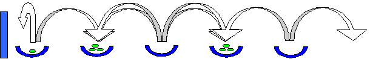

Problem A
Splitting Peas
Input: a.in
Splitting peas are a remarkable phenomenon. Every so often they all jump up and split themselves in two. Now imagine a straight line of cups, each one containing a certain number of splitting peas. To the left of the line of cups, there is a wall (we will get back to it later). When it is splitting time, all the peas jump up out of their cups, and split themselves in mid-air. From each splitted pea, the two resulting peas land in the two neighboring cups (one in each cup).
An example:
In this configuration we have five cups, and one pea in the center cup. We will denote this configuration as (0,0,1,0,0). After one step (i.e. one splitting of the peas), we get the following configuration (0,1,0,1,0):
One step later the configuration is (1,0,2,0,1), we leave it up to you to draw this one if you like. In the next step some special things happen, since there are peas in the leftmost cup and in the rightmost cup. The peas in the leftmost cup jump up, split, and one pea will go to the second cup from the left (as usual), but the other pea will bounce against the wall and land in the leftmost cup again. The peas in the rightmost cup will also jump up, split, and one pea will go to the second cup from the right (as usual), but the other pea will fall off the right side of the table and disappear. So the configuration after the next step will be (1,3,0,3,0):

Another example is the configuration (1,2,3,4,5), which becomes (3,4,6,8,4) in one step. We say that the predecessor of (3,4,6,8,4) is (1,2,3,4,5). Most configurations have a predecessor (which is always unique), some configurations however, do not have a predecessor: these configurations are called root configurations. In the first example we gave, (0,0,1,0,0) is obviously a root configuration, and in our second example (1,2,3,4,5) is also a root configuration.
You are given a configuration that resulted after a certain number of steps from some root configuration. It is up to you to calculate the number of steps that took place, in going from the unknown root configuration to the given input configuration.
Input
The first line of the input contains the number of runs R (1 ≤ R = 10,000). For each run there is one line containing the number of cups p (2 ≤ p ≤ 1,000), followed by one line containing p integers ni(0 ≤ ni ≤ 1,000,000), representing the number of peas in cup i (from left to right).
Output
For each run, the output should consist of one line containing the number of steps that have been taken to reach the given input configuration from a root configuration.
|
Sample Input |
Output for the Sample Input |
|
4 5 1 3 0 3 0 5 3 4 6 8 4 6 4 1 6 0 4 0 15 10 45 1 120 0 210 0 252 0 210 0 120 0 44 0 |
3 1 4 10 |